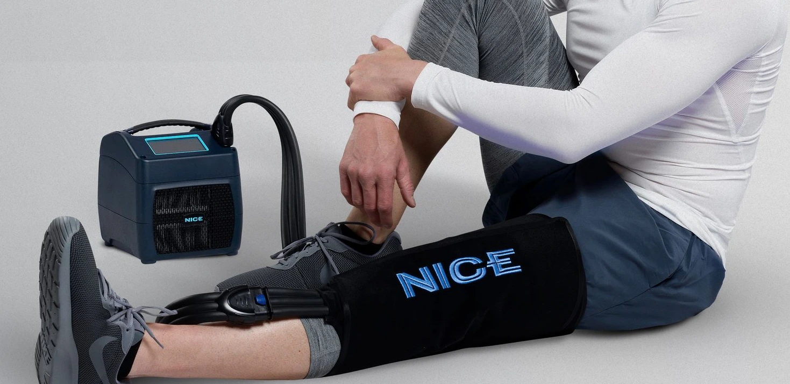

Equipo de recuperacion, entregado e instalado en su hogar.
Ortho Flow Recovery lleva terapia avanzada de frio y compresion a su hogar, con instalacion personalizada, apoyo confiable y servicio durante toda su recuperacion.
Por que los pacientes eligen Ortho Flow
Tecnologia moderna para el manejo del dolor.
El NICE1 combina terapia de frio controlado y compresion programable en un sistema compacto, ayudando a los pacientes a manejar las molestias posoperatorias sin los inconvenientes del hielo tradicional.
Servicio personalizado de principio a fin.
Entregamos el equipo, lo instalamos en su hogar, le explicamos como usarlo y estamos disponibles durante todo el alquiler para que siempre tenga a alguien a quien llamar.
Recuperacion mas facil en casa.
Sin carreras por hielo, sin recoger el equipo, sin envios de devolucion. Todo se lleva a su hogar, se brinda soporte durante el alquiler y se recoge cuando termina.
El sistema de terapia de frio y compresion NICE1
NICE usa tecnologia avanzada para mejorar considerablemente la comodidad de la terapia de frio y compresion. NICE elimina los inconvenientes al proporcionar terapia de frio precisa sin necesidad de hielo. La compresion neumatica programable esta comprobada para reducir el edema y acelerar la recuperacion. NICE integra estas terapias altamente efectivas en un paquete compacto (8x8x8 pulgadas) y liviano (9 lb) con una interfaz de pantalla tactil facil de usar.
Vendas disponibles: Pie y tobillo, rodilla, pierna baja, cadera, lumbar, cervical, hombro, codo, mano y muneca.

Como funciona
1. Diganos su plazo.
Haganos saber cuando se acerca su procedimiento y confirmaremos la disponibilidad y coordinaremos los proximos pasos.
2. Entregamos antes de la cirugia.
Programamos la entrega en torno a la fecha de su procedimiento, con flexibilidad para que su equipo este listo antes de que lo necesite.
3. Mantenemos el contacto.
Nos comunicamos durante su recuperacion para asegurarnos de que todo funcione correctamente y responder cualquier pregunta.
4. Recogemos el equipo.
Cuando termine, coordinamos una recogida conveniente directamente con usted. Sin envios de devolucion ni logistica adicional.
Lo que dicen nuestros pacientes
★★★★★
"Para mi fue el nivel de atencion que mostro John. Vino a la casa y me enseno como usar el equipo. Estuvo pendiente de mi durante toda mi recuperacion. No podria haber pedido una mejor experiencia."
Natacha
★★★★★
"John brindo un servicio de primera categoria. Vino a nuestra casa a instalarlo y respondio rapidamente cualquier pregunta durante los dos meses que tuvimos el NICE. El NICE es la unica opcion para la cirugia de rodilla. Hizo una gran diferencia en la reduccion del dolor y la inflamacion. Tan conveniente y facil de usar."
Paciente anonimo
★★★★★
"Todo el proceso de principio a fin. Me contactaron antes de la cirugia. El equipo fue entregado antes de mi procedimiento con una explicacion de como funcionaba y que haria por mi recuperacion. Cuando termine, lo recogieron en mi casa."
Elizabeth
Precios simples, todo incluido
Minimo dos semanas a $25 por dia, con entrega y recogida incluidas. ¿Necesita mas tiempo? Desde $150 por semana despues de eso. Cualquier problema de ajuste o con el equipo durante su alquiler se atiende sin costo adicional.
Creados para atender lo que nadie mas atiende
Ortho Flow fue creado para llevar un mayor nivel de servicio, comodidad y manejo del dolor a la recuperacion posoperatoria en casa. Despues de ver muchas innovaciones en el mercado ortopedico, creimos que aun habia una oportunidad de apoyar mejor a los pacientes una vez que salen del consultorio medico. Al actuar como una extension del equipo de atencion, Ortho Flow ayuda a los pacientes a gestionar sus necesidades posoperatorias con atencion personalizada, opciones modernas de terapia y apoyo durante toda la recuperacion.
Leer Nuestra HistoriaReserve su equipo
Indicenos su plazo general y confirmaremos disponibilidad y entrega.
Por favor, no incluya informacion medica en este formulario. Nos comunicaremos con usted por telefono para hablar sobre los detalles.